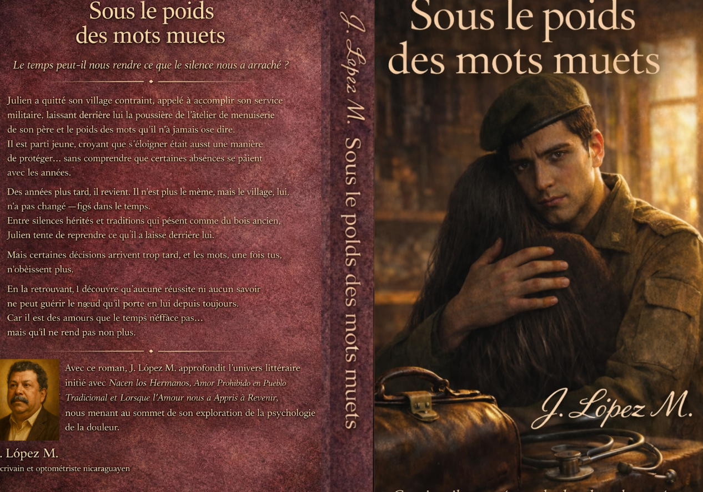

L'amour qui nous unit quand le silence se brise

Le temps peut-il nous rendre ce que le silence nous a arraché ?
Julien a quitté son village contraint, appelé à accomplir son service militaire, laissant derrière lui la poussière de l'atelier de menuiserie de son père et le poids des mots qu'il n'a jamais osé dire. Il est parti jeune, croyant que s'éloigner était aussi une manière de protéger… sans comprendre que certaines absences se paient avec les années.
Des années plus tard, il revient. Il n'est plus le même, mais le village, lui, n'a pas changé — figé dans le temps. Entre silences hérités et traditions qui pèsent comme du bois ancien, Julien tente de reprendre ce qu'il a laissé derrière lui.
Mais certaines décisions arrivent trop tard, et les mots, une fois tus, n'obéissent plus.
En la retrouvant, il découvre qu'aucune réussite ni aucun savoir ne peut guérir le nœud qu'il porte en lui depuis toujours. Car il est des amours que le temps n'efface pas… mais qu'il ne rend pas non plus.
Auteur: J. LÓPEZ M.
Genre: Roman / Drame familial
Langue: Français
Format: eBook Kindle | Tapa blanda
Pages: 258 pages
ISBN-13: 979-8257186004
ASIN: B0GX74QZ9C
Édition: Première édition, 2026
Date de publication: 13 avril 2026
Dimensions: 6 x 0.59 x 9 pouces
Publié par: Kindle Direct Publishing (KDP)